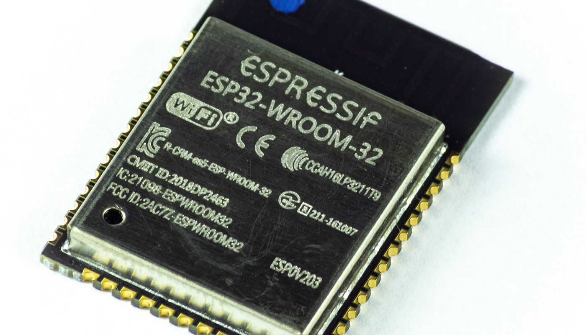
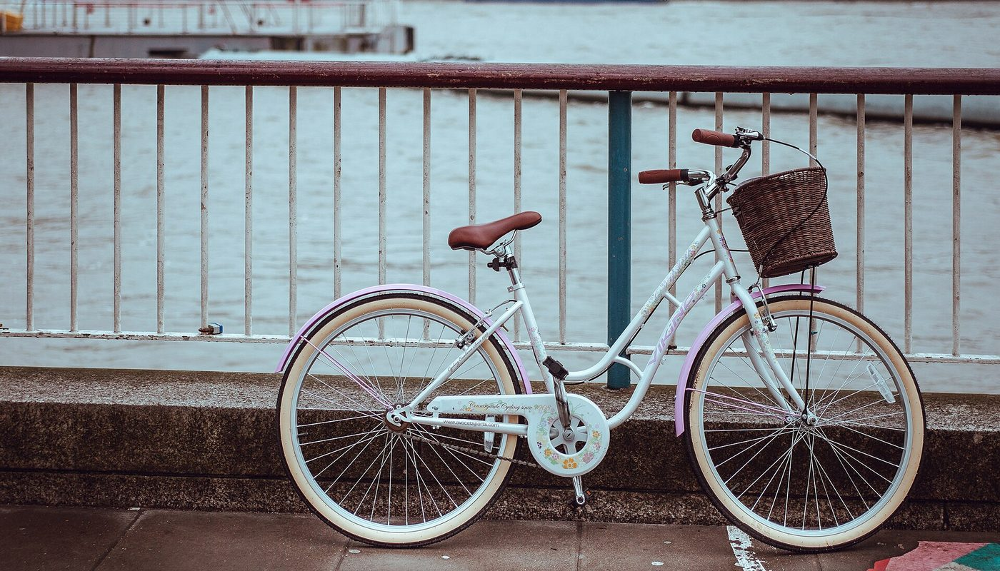

Makers · aucun lien affilié sur cette page · prix relevés le 2 oct. 2026
Tracker « Localiser » maison : ce qu'un ESP32 remplace vraiment, et à quel prix

Un projet universitaire permet de fabriquer ses propres balises suivies par le réseau Localiser d'Apple, avec une carte à quelques euros. Le 2 octobre 2026, l'écart est réel et mesurable : 35,00 € le pack de 1 AirTag chez Apple, 14,40 € la carte ESP32-WROOM-32 chez un revendeur français. Mais ce que vous économisez en argent, vous le payez en fonctions et en temps de mise en place — et les tutos oublient généralement de le dire.
Aucun lien affilié sur cette page — voir comment ça marche Projets libres OpenHaystack et Macless-Haystack
En bref
- Le matériel est moins cher, oui. 14,40 € la carte de développement ESP32-WROOM-32 chez un revendeur français, contre 35,00 € l'AirTag seul — et 29,75 € l'unité si vous prenez le pack de 4.
- Vous n'achetez pas un AirTag moins cher. Le montage n'a pas de puce UWB : pas de « Localisation précise » avec distance et direction. Le firmware libre se présente lui-même comme expérimental.
- L'abonnement n'est pas l'argument. Apple ne facture aucun abonnement pour Localiser, ni sur l'AirTag ni sur un accessoire tiers. L'économie porte sur le prix du matériel.
- La mise en place est technique. Docker, Python, un identifiant Apple avec double authentification par SMS, un flashage de firmware — comptez une soirée, pas dix minutes.
D'où vient ce montage
Le point de départ est un travail de recherche de l'université technique de Darmstadt : OpenHaystack. Le projet permet de créer ses propres balises Bluetooth repérées par le réseau Localiser d'Apple, et il documente au passage comment ce réseau fonctionne. Un second projet, Macless-Haystack, a supprimé la contrainte historique — il n'exige plus de Mac et s'installe via Docker, avec un firmware pour ESP32.
Nous documentons ce dossier parce que notre veille commerciale y a vu une différence de prix exploitable — et parce que cette différence mérite d'être écrite honnêtement : la carte est moins chère, mais ce n'est pas le même objet. Le reste de cette page est fait de prix relevés sur les pages publiques et de contraintes lues dans la documentation des projets.
Les prix, relevés le 2 octobre 2026
Barres proportionnelles, base à zéro. Les trois montants sont ceux qui étaient affichés par les vendeurs le 2 octobre 2026 ; le prix unitaire du pack de 4 est une division du prix affiché (119,00 € ÷ 4), pas un prix publié comme tel. La carte ESP32 est le seul poste de dépense que nous comparons ici : pile, boîtier et port ne sont pas chiffrés faute de prix affiché publiquement.
| Ce que vous achetez | Prix affiché | Vu où, le 2 oct. 2026 |
|---|---|---|
| Apple AirTag, pack de 1 | 35,00 € | page produit Apple FR |
| Apple AirTag, pack de 4 | 119,00 € (29,75 € l'unité) | page produit Apple FR |
| Carte de développement ESP32-WROOM-32 | 14,40 € | catalogue d'un revendeur français |
| Cartes ESP32 voisines (bi-mode Wi-Fi, ESP32-S3 industrielle) | 11,70 € et 20,20 € | même catalogue |
Ce que cette page ne chiffre pas, volontairement : la pile, la coque (l'impression 3D suppose d'avoir l'imprimante), le port et la TVA selon le vendeur, et l'autonomie réelle du montage — nous ne l'avons pas mesurée. Notre veille a par ailleurs relevé, chez des revendeurs d'import, des cartes à 5-10 $ l'unité ; nous ne les affichons pas comme prix de référence : ces pages de vente ne sont pas consultables publiquement sans compte, donc nous ne pouvons pas les citer comme une lecture vérifiable.
Ce que le montage ajoute, et ce qu'il retire
Ce qu'il ajoute
- Un coût unitaire plus bas quand il vous en faut plusieurs — c'est le cas visé par les projets : vélo, valise, clés, outil de chantier. À trois balises, l'écart avec le pack de 4 n'est plus le même qu'à une seule.
- Du matériel ouvert et réparable, sur une carte que vous choisissez. Le même firmware tourne sur ESP32 comme sur des puces NRF5x, et les projets compatibles se sont multipliés depuis.
- La compréhension du réseau. En installant le serveur, vous voyez par où passent les rapports de position et ce qu'Apple centralise : utile même si vous finissez par acheter un AirTag.
Ce qu'il retire
- La « Localisation précise ». Elle repose sur une puce UWB que ce montage n'a pas : vous obtenez une position, pas une flèche avec une distance.
- La fiabilité d'un produit fini. Le firmware libre est publié comme expérimental et incomplet, et il diffuse une clé fixe : d'autres appareils à proximité peuvent repérer votre balise.
- Une mise en route en dix minutes. Il faut Docker, Python, un identifiant Apple dont la double authentification passe par SMS, et un flashage de firmware. Le confort de configuration d'un AirTag se paie quelque part.

La checklist avant de commander
- Compter le nombre de balises dont vous avez besoin. C'est le seul argument de coût solide : une seule balise DIY vaut rarement la soirée de mise en place.
- Vérifier le type de carte acceptée par le firmware que vous allez utiliser (ESP32 ou NRF5x), et pas seulement le prix du module.
- Vérifier la pile et le boîtier avant de commander la carte : c'est là que le budget réel se complète.
- Vérifier que vous avez un identifiant Apple avec double authentification par SMS — les autres seconds facteurs ne sont pas reconnus par le projet sans Mac.
- Accepter l'avertissement de confidentialité des auteurs : clé publique fixe, balise repérable par d'autres appareils à proximité. À éviter sur les objets sensibles.
- Comparer au pack le moins cher, pas au prix unitaire seul : le pack de 4 AirTag affiché le 2 octobre 2026 revient à 29,75 € l'unité.
- Décider pour qui c'est fait. Bricoleur avec une soirée devant lui : oui. Quelqu'un qui veut poser une balise et l'oublier : non.
Questions
Le tracker maison coûte-t-il vraiment moins cher ?
Sur le matériel, oui : carte à 14,40 € contre 35,00 € l'AirTag seul (et 29,75 € l'unité en pack de 4), prix relevés le 2 octobre 2026. Mais la carte ne suffit pas — pile, boîtier, port et temps de mise en place s'ajoutent, et nous ne les chiffrons pas sur cette page faute de prix publics affichés.
Est-ce que ça marche comme un AirTag ?
Pour être repéré par le réseau Localiser d'Apple, oui : les rapports de position remontent. Pour tout le reste, non : pas de puce UWB donc pas de « Localisation précise » avec distance et direction, pas de sonnerie intégrée comparable, et un firmware que ses auteurs qualifient d'expérimental et d'incomplet.
Faut-il un Mac ?
Plus obligatoirement. Le projet d'origine demande macOS 11 et un plugin pour Apple Mail, avec la désactivation temporaire de Gatekeeper. Macless-Haystack a supprimé cette contrainte : Docker, Python et un identifiant Apple avec 2FA par SMS suffisent.
Y a-t-il un abonnement à payer ?
Non — et l'AirTag non plus n'en demande pas. Le réseau Localiser est gratuit pour les deux. Si un article présente le montage maison comme « le tracker sans abonnement », sachez que l'argument ne distingue rien.
Puis-je le mettre sur mon vélo ?
C'est l'usage le plus cité, et il faut le dire franchement : un tracker caché ne remplace pas un bon antivol, et le firmware expérimental diffuse une clé fixe, donc une balise repérable. Considérez-le comme un complément, pas comme une protection.
Cette page contient-elle des liens affiliés ?
Non. Aucun lien de cette page ne nous rapporte de commission à la date du 2 octobre 2026. Le programme d'affiliation AliExpress est enregistré comme candidat dans nos registres, aucun compte n'est créé, aucun lien n'est posé. La page À propos sera mise à jour le jour où cela changera.
Comment cette page est faite
- Aucun lien affilié ici. Le dépositaire naturel de ce type de page est un programme de place de marché (les cartes viennent d'import). Le nôtre est enregistré comme candidat, pas approuvé : donc aucun lien, et nous l'écrivons plutôt que de l'espérer.
- Les prix sont ceux affichés par les vendeurs. 35,00 € et 119,00 € sont lus sur la page produit d'Apple France, 14,40 € / 11,70 € / 20,20 € sur le catalogue d'un revendeur français, le 2 octobre 2026. Le 29,75 € est une division du pack, signalée comme telle.
- Les contraintes viennent de la documentation des projets. Avertissement d'expérimentation, clé publique fixe, prérequis Docker/Python, 2FA par SMS : lus dans les README publics des deux dépôts, pas dans un article de seconde main.
- Aucune autonomie annoncée. Nous ne publions pas de durée de pile : nous ne l'avons pas mesurée, et c'est justement la donnée qui manque le plus dans les présentations du montage.
- Aucun témoignage inventé. Cette page ne cite aucun avis client, faute d'avis public et daté que nous aurions pu vérifier.
- Les images sont des banques libres (CC0), encadrées et créditées en pied de page. Le module photographié n'est pas celui du montage décrit.
Sources
- Dépôt public OpenHaystack (seemoo-lab, TU Darmstadt) — README consulté le 2 octobre 2026 : principe des balises suivies par le réseau Localiser, prérequis macOS 11 et plugin Apple Mail, avertissement « experimental software », clé publique fixe, absence de lien avec Apple.
- Dépôt public Macless-Haystack — README consulté le 2 octobre 2026 : fonctionnement sans Mac, prérequis Docker / Python / identifiant Apple avec 2FA par SMS uniquement, firmwares ESP32 et NRF5x, compatibilité avec d'autres appareils compatibles OpenHaystack.
- Page produit Apple France « Acheter un AirTag » (consultée le 2 octobre 2026) : 35,00 € le pack de 1, 119,00 € le pack de 4.
- Catalogue d'un revendeur français consulté le 2 octobre 2026 (page de recherche « ESP32 ») : carte de développement ESP32-WROOM-32 14,40 €, carte bi-mode Wi-Fi 11,70 €, carte industrielle ESP32-S3 20,20 €.
- Notre veille retail du 2 octobre 2026 : sourcing de cartes ESP32 chez des revendeurs d'import (5-10 $ l'unité, MOQ 1) — non reproduit comme prix de référence, ces pages n'étant pas consultables sans compte.
- Crédits images (banque libre) : module ESP32-WROOM-32 — Ubahnverleih, CC0, via Wikimedia Commons · vélo de ville — Clem Onojeghuo, CC0, via Wikimedia Commons.
- Guides liés : Cadre e-ink à oiseaux : la liste de courses réelle · Facture électronique : convertir en Factur-X · Honest Switch — comparatif honnête
Avis clients
Avis sur ce guide, publiés après vérification. Chaque avis négatif reçoit une réponse publique — c'est comme ça qu'on s'améliore.
Les premiers avis seront publiés ici dès que de vrais lecteurs en enverront.